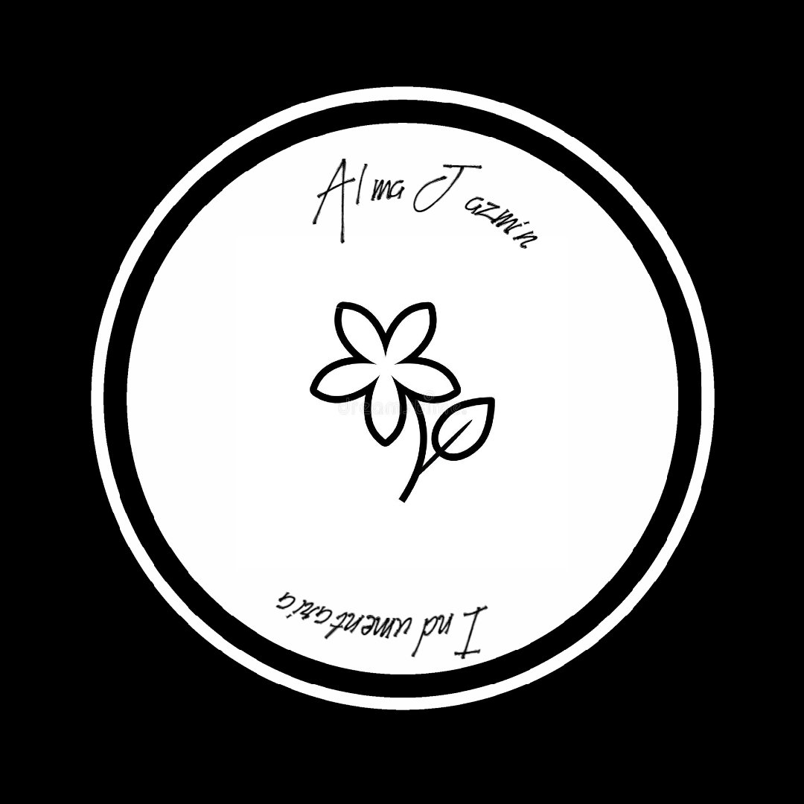

NOSOTROS
En Alma Jazmín Tejidos, cada pieza es una obra artesanal, creada con amor y dedicación por Rosa Jazmín, quien lleva años perfeccionando la técnica del crochet. Inspirada en la delicadeza de los tejidos hechos a mano, Rosa transforma hilos en creaciones únicas y personalizadas, ideales para regalar o disfrutar en el hogar.Con un enfoque en la calidad y el detalle, Alma Jazmín Tejidos ofrece productos que van desde prendas de vestir hasta artículos de decoración, todos realizados con materiales seleccionados y un profundo compromiso con el arte del crochet. ¡Cada puntada cuenta una historia!
